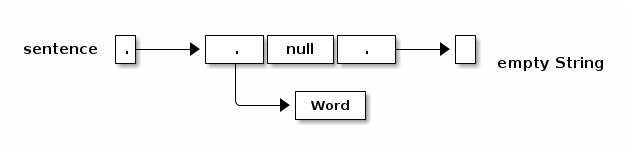
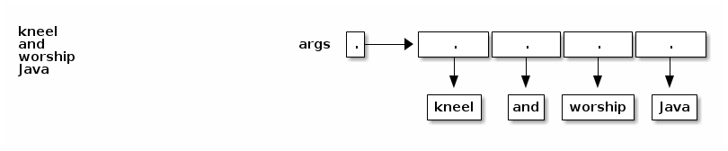

notes6
Table of Contents
Lecture 6
Today's reading: Sierra & Bates pp. 282-285.
MORE ARRAYS
Automatic Array Construction
Last lecture, we used a loop to construct all the arrays that the top-level array references. This was necessary to construct a triangular array. But if you want a rectangular multi-dimensional array, rather than a triangular one, Java can construct all of the arrays for you at once.
int[][] table = new int[x][y];
This declaration constructs an array of x references to arrays. It also constructs x arrays of y ints. The variable "table" references the array of arrays; and each entry in the array of arrays references one of the arrays of ints. All the arrays are constructed for you at once. Similarly, Java can construct three- or ten-dimensional arrays for you, memory permitting.
We could have used a square array to store Pascal's Triangle, but that would have unnecessarily wasted memory. If you have enough memory, you might not care.
When you declare a variable, you can also construct array entries by using initializers.
Human[] b = {amanda, rishi, new Human("Paolo")}; int[][] c = {{7, 3, 2}, {x}, {8, 5, 0, 0}, {y + z, 3}};
In the second example, Java constructs a non-rectangular two-dimensional array, composed of one array of arrays and four arrays of ints.
Sadly, you can only use this notation in a declaration. You can't write
d = {3, 7}; // Compile-time ERROR.
f({1, 2, 3}); // Compile-time ERROR.
Another subtlety of array declarations is the following.
int[] a, b, c; // a, b, and c all reference arrays. int a[], b, c[][]; // a is 1D; c is 2D; b is not a reference/array. int[] a, b[]; // a references a 1D array; b references a 2D array.
Arrays of Objects
When you construct a multi-dimensional array, Java can construct all the arrays for you. But when you construct an array of objects, Java does not construct the objects automatically. The array contains space for references to the objects. You must construct the objects yourself.
String[] sentence = new String[3]; sentence[0] = "Word"; sentence[2] = new String();

main()'s Parameter
What is the array of Strings that the main() method takes as a parameter? It's a list of command-line arguments sent to your Java program, prepared for you by Java. Consider the following program.
class Echo { public static void main(String[] args) { for (int i = 0; i < args.length; i++) { System.out.println(args[i]); } } }
If we compile this and type "java Echo kneel and worship Java", java prints

MORE LOOPS
"do" Loops
A "do" loop has just one difference from a "while" loop. If Java reaches a "do" loop, it always executes the loop body at least once. Java doesn't check the loop condition until the end of the first iteration. "do" loops are appropriate for any loop you always want executed at least once, especially if the variables in the condition won't have meaningful assignments until the loop body has been executed.
do { s = keybd.readLine(); process(s); } while (s.length() > 0); // Exit loop if s is an empty String.
The "break" and "continue" Statements
A "break" statement immediately exits the innermost loop or "switch" statement enclosing the "break", and continues execution at the code following the loop or "switch".
In the loop example above, we might want to skip "process(s)" when s is a signal to exit (in this case, an empty String). We want a "time-and-a-half" loop–we want to enter the loop at a different point in the read-process cycle than we want to exit the loop at. Here are two alternative loops that do the right thing. They behave identically. Each has a different disadvantage.
s = keybd.readLine(); | while (true) { // Loop forever. while (s.length() > 0) { | s = keybd.readLine(); process(s); | if (s.length() == 0) { s = keybd.readLine(); | break; } | } | process(s); |} /*Disadvantage: The line "s = keybd..." | is repeated twice. It's not really | a disadvantage here, but if input | Disadvantage: Somewhat obfuscated for took 100 lines of code, the | the reader, because the loop isn't duplication would make the code harder | aligned with its natural endpoint. to maintain. Why? Because a programmer improving the code might change one copy of the duplicated code without noticing the need to change the other to match.*/
Some loops have more than one natural endpoint. Suppose we want to iterate the read-process loop at most ten times. In the example at left below, the "break" statement cannot be criticized, because the loop has two natural endpoints. We could get rid of the "break" by writing the loop as at right below, but the result is longer and harder to read.
for (int i = 0; i < 10; i++) { | int i = 0; s = keybd.readLine(); | do { if (s.length() == 0) { | s = keybd.readLine(); break; | if (s.length() > 0) { } | process(s); process(s); | } } | i++; | } while ((i < 10) && | (s.length() > 0));
There are anti-break zealots who claim that the loop on the right is the "correct" way to do things. I disagree, because the left loop is clearly more readable.
Some of the zealots feel this way because "break" statements are a little bit like the "go to" statements found in some languages like Basic and Fortran (and the machine language that microprocessors really execute). "go to" statements allow you to jump to any line of code in the program. It sounds like a good idea at first, but it invariably leads to insanely unmaintainable code. For example, what happens if you jump to the middle of a loop? Turing Award winner Edsger Dijkstra wrote a famous article in 1968 entitled "Go To Statement Considered Harmful", which is part of the reason why many modern languages like Java don't have "go to" statements.
Both "break" and "return" are limited forms of "go to" statements. Their limitations prohibit the worst abuses of "go to". They allow control flow to jump in your program in ways that are straightforward to understand.
WARNING: It's easy to forget exactly where a "break" statement will jump to. For example, "break" does not jump to the end of the innermost enclosing "if" statement. An AT&T programmer introduced a bug into telephone switching software in a procedure that contained a "switch" statement, which contained an "if" clause, which contained a "break", which was intended for the "if" clause, but instead jumped to the end of the "switch" statement. As a result, on January 15, 1990, AT&T's entire U.S. long distance service collapsed for eleven hours. (That code was actually written in C, but Java and C use identical syntax and semantics for loops, "switch", and "break".)
The "continue" statement is akin to the "break" statement, except (1) it only applies to loops, and (2) it jumps to the end of the loop body but it doesn't necessarily exit the loop; another iteration will commence if the loop condition is satisfied.
Finally, I told you that "for" loops are identical to certain "while" loops, but there's actually a subtle difference when you use "continue". What's the difference between the following two loops?
int i = 0; | for (int i = 0; i < 10; i++) { while (i < 10) { | if (condition(i)) { if (condition(i)) { | continue; continue; | } } | call(i); call(i); | } i++; | } |
Answer: when "continue" is called in the "while" loop, "i++" is not executed. In the "for" loop, however, i is incremented at the end of every iteration, even iterations where "continue" is called.
CONSTANTS
Java's "final" keyword is used to declare a value that can never be changed. If you find yourself repeatedly using a numerical value with some "meaning" in your code, you should probably turn it into a "final" constant.
BAD: if (month == 2) { GOOD: public final static int FEBRUARY = 2; // Usually near top of class. ... if (month == FEBRUARY) {
Why? Because if you ever need to change the numerical value assigned to February, you'll only have to change one line of code, rather than hundreds.
You can't change the value of FEBRUARY after it is declared and initialized. If you try to assign another value to FEBRUARY, you'll have a compiler error.
The custom of rendering constants in all-caps is long-established and was inherited from C. (The compiler does not require it, though.)
For any array x, "x.length" is a "final" field.
You can declare local parameters "final" to prevent them from being changed.
void myMethod(final int x) { x = 3; // Compiler ERROR. Don't mess with X's! }
"final" is usually used for class variables (static fields) and parameters, but it can be used for instance variables (non-static fields) and local variables too. It only makes sense for these to be "final" if the variable is declared with an initializer that calls a method or constructor that doesn't always return the same value.
class Bob { public final long creationTime = System.currentTimeMillis(); }
When objects of the Bob class are constructed, they record the time at that moment. Afterward, the creationTime can never be changed.
SCOPE
The scope of a variable is the portion of the program that can access the variable. Here are some of Java's scoping rules.
- Local variables and parameters are in scope only inside the method that declares them. Furthermore, a local variable is in scope only from the variable declaration down to the innermost closing brace that encloses it. A local variable declared in the initialization part of a "for" loop is in scope only in the loop body.
- Class variables (static fields) are in scope everywhere in the class, except when shadowed by a local variable or parameter of the same name.
- Instance variables (non-static fields) are in scope in non-static methods of the class, except when shadowed.